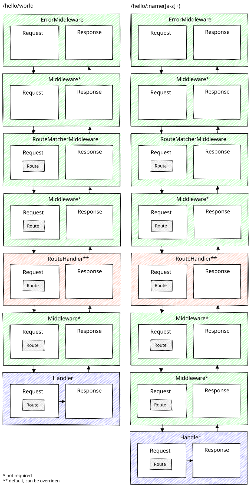

@chubbyts/chubbyts-framework
chubbyts-framework


Description
A minimal, highly performant middleware PSR-15 inspired function based micro framework built with as little complexity as possible, aimed primarily at those developers who want to understand all the vendors they use.

Requirements
- node: 20
- @chubbyts/chubbyts-dic-types: ^2.0.1
- @chubbyts/chubbyts-http-error: ^3.0.1
- @chubbyts/chubbyts-log-types: ^3.0.1
- @chubbyts/chubbyts-throwable-to-error: ^2.0.2
- @chubbyts/chubbyts-undici-server: ^1.0.1
Installation
Through NPM as @chubbyts/chubbyts-framework.
npm i \
@chubbyts/chubbyts-framework-router-path-to-regexp@^3.0.0 \
@chubbyts/chubbyts-framework@^3.0.2 \
@chubbyts/chubbyts-undici-server@^1.0.1
Usage
import { STATUS_CODES } from 'node:http';
import { createPathToRegexpRouteMatcher }
from '@chubbyts/chubbyts-framework-router-path-to-regexp/dist/path-to-regexp-router';
import type { ServerRequest } from '@chubbyts/chubbyts-undici-server/dist/server';
import { Response } from '@chubbyts/chubbyts-undici-server/dist/server';
import { createApplication } from '@chubbyts/chubbyts-framework/dist/application';
import { createErrorMiddleware }
from '@chubbyts/chubbyts-framework/dist/middleware/error-middleware';
import { createRouteMatcherMiddleware }
from '@chubbyts/chubbyts-framework/dist/middleware/route-matcher-middleware';
import { createGetRoute } from '@chubbyts/chubbyts-framework/dist/router/route';
import { createRoutesByName } from '@chubbyts/chubbyts-framework/dist/router/routes-by-name';
const app = createApplication([
createErrorMiddleware(true),
createRouteMatcherMiddleware(
createPathToRegexpRouteMatcher(
createRoutesByName([
createGetRoute({
path: '/hello/:name',
name: 'hello',
handler: async (serverRequest: ServerRequest<{name: string}>): Promise<Response> => {
return new Response(`Hello, ${serverRequest.attributes.name}`, {
status: 200,
statusText: STATUS_CODES[200],
headers: {'content-type': 'text/plain'}
});
},
}),
]),
),
),
]);
Server
node
Running the application via the standard node http implementation.
npm i @chubbyts/chubbyts-undici-server-node@^1.0.1
Check the Usage section.
uWebSockets
Running the application via the uWebSockets http implementation.
npm i @chubbyts/chubbyts-undici-server-uwebsockets@^1.0.0
Check the Usage section.
Handler's / Middleware's
- @chubbyts/chubbyts-undici-api
- @chubbyts/chubbyts-undici-cors
- @chubbyts/chubbyts-undici-multipart
- @chubbyts/chubbyts-undici-static-file
Skeleton
Copyright
2025 Dominik Zogg